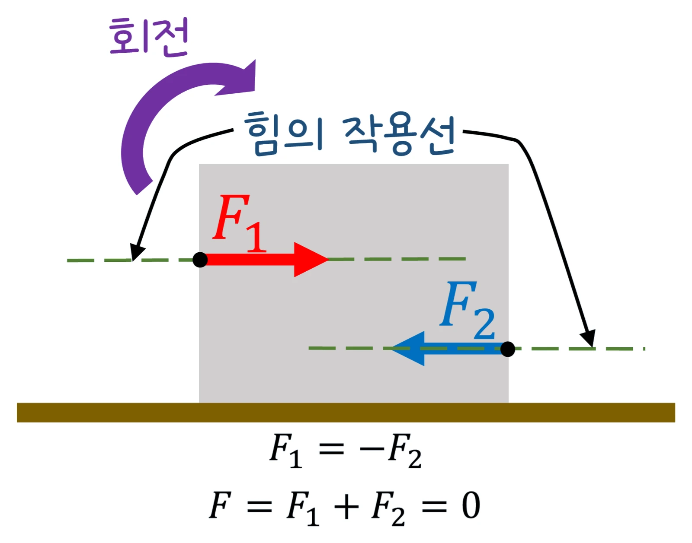

고2 물리학 · Ⅰ 힘과 에너지 · 웹툰 1화 「시소 위의 뭉치」
실험에서 막대 위 추의 위치와 받침점(가운데 / 왼쪽 10 cm)을 바꿔 가며 저울로 막대를 수평으로 만드는 데 필요한 힘을 쟀습니다. 힘 × 거리가 양쪽에서 같아질 때 막대가 멈췄고, 받침점을 옮기면 막대 자체 무게의 돌림힘이 새로 생겨 힘이 달라졌습니다. 돌림힘과 회전 평형을 정리합니다.
실험 데이터 되짚기
막대 1 m · 질량 0.20 kg(무게 1.96 N), 추 150 g(1.47 N), g = 9.8 m/s². 저울은 아래로 당기면 +.
| 받침점 | 추 위치 (받침점 기준) | 저울 위치 | 추의 돌림힘 | 막대 무게의 돌림힘 | 저울 힘 |
|---|---|---|---|---|---|
| 막대 가운데 (50 cm) | 왼쪽 30 cm | 오른쪽 20 cm | 1.47 × 0.30 = 0.441 N·m | 0 (축을 지남) | 0.441 ÷ 0.20 = 2.2 N |
| 막대 가운데 | 왼쪽 30 cm | 오른쪽 40 cm | 0.441 N·m | 0 | 1.1 N (거리 2배 → 힘 절반) |
| 왼쪽 10 cm (40 cm) | 왼쪽 30 cm | 오른쪽 20 cm | 0.441 N·m (반시계) | 1.96 × 0.10 = 0.196 N·m (시계) | (0.441 − 0.196) ÷ 0.20 = 1.2 N |
막대가 수평으로 멈춰 있을 때 시계 방향 돌림힘 합 = 반시계 방향 돌림힘 합입니다. 받침점만 옮겼는데 힘이 달라진 까닭은 무게 중심(막대 가운데)에 작용하는 막대 무게의 돌림힘이 새로 생겼기 때문 — 크레인이 반대쪽에 평형추를 다는 이유와 같습니다.
물체를 회전시키는 능력을 돌림힘(토크)이라 하고, 크기는 τ = F × d(힘 × 회전축에서 힘의 작용선까지의 수직 거리)입니다. 막대가 수평으로 멈춰 있으려면 두 조건이 필요합니다: ① 힘의 합 = 0(병진 평형), ② 시계 방향 돌림힘 합 = 반시계 방향 돌림힘 합(회전 평형). 막대 자체의 무게도 무게 중심(균일한 막대의 가운데)에 작용하는 힘으로 셈해야 하며, 받침점이 가운데가 아니면 막대 무게의 돌림힘이 0이 아닙니다. 거리가 2배면 필요한 힘은 절반 — 지레의 원리. 힘의 방향이 막대와 수직이 아니면 수직 성분만 돌림힘에 기여합니다.
움직여 보기
막대 저울 — 시계·반시계 돌림힘이 같아지면 멈춘다
받침점을 막대 가운데(50 cm)와 왼쪽 10 cm(40 cm)로 바꿔 보세요. 받침점을 옮기면 막대 무게(초록)가 시계 방향 돌림힘을 보태 저울 힘이 줄어듭니다. 막대 1 m·0.20 kg, 추 150 g, g = 9.8, 저울은 아래로 당김. 막대가 기우는 각도는 크게 과장했습니다.
교재 그림
힘의 합이 0이어도 돌 수 있다

두 힘의 크기가 같고 방향이 반대라 알짜힘은 0인데, 작용선이 어긋나 있어 상자가 돕니다. 그래서 멈춰 있으려면 알짜힘 0에 더해 돌림힘의 합 0이라는 조건이 하나 더 필요합니다.
제로(50 kg, 500 N)가 받침점에서 2 m, 뭉치(100 kg, 1000 N)가 1 m에 앉으면 500 × 2 = 1000 × 1 = 1000 N·m로 균형(g = 10 m/s²로 어림). 받침점은 두 무게를 다 받쳐 1500 N을 위로 밀어 알짜힘 0. 타워 크레인은 기둥에서 30 m에 2톤 짐을 들면 10 m 위치의 평형추가 6톤이어야 돌림힘이 상쇄됩니다(2000 × 30 = m × 10). 그래서 크레인은 팔의 위치마다 들 수 있는 최대 무게가 정해져 있습니다.
받침점 마찰, 실의 질량, 저울 자체의 무게를 무시했습니다. 실제 실험에서는 저울 눈금이 5~10 % 차이 나고 막대가 완전히 균일하지 않으면 무게 중심이 가운데에서 벗어납니다. 저울이 비스듬히 당기면 수직 성분만 작용하므로 실제 실험에서는 저울을 막대에 수직으로 세워야 합니다. 시소·병따개·문손잡이(경첩에서 멀수록 쉬움)·렌치(긴 자루)는 모두 돌림힘 원리이고, 기중기가 무거운 짐을 들 때 반대쪽에 평형추를 두는 것도 회전 평형입니다.
d_c: 받침점에서 막대 중심까지(부호는 방향에 따라) · g = 9.8 · 평형: 알짜힘 0 + 돌림힘 합 0
“물리학 시즌 1라운드! 나는 받침점에서 1 m. 제로는 받침점에서 몇 m에 앉아야 수평이 될까?” “내가 뭉치의 절반 무게니까… 두 배 멀리, 2 m!”
웹툰 1화 · 스코어보드 띵! 제로 1 : 0 뭉치
“물체를 회전시키는 효과를 돌림힘이라고 해. 크기는 힘 × 회전축에서 힘이 작용하는 곳까지의 거리야. 가만히 수평을 유지하려면 조건이 두 개야. 돌림힘의 합이 0이어야 돌지 않고, 알짜힘이 0이어야 위아래로 움직이지 않아.”
웹툰 1화 · 제로: “문손잡이가 경첩에서 먼 쪽에 달린 이유도 이거네.”
1.47 × 0.40 = F × 0.25 → F = 2.35 N. 막대 무게는 축을 지나 돌림힘 0.
무게 중심이 받침점 오른쪽 10 cm에 있어 막대 무게 1.96 N × 0.10 = 0.196 N·m의 시계 방향 돌림힘이 추의 반시계 돌림힘(0.441)을 일부 상쇄하기 때문입니다. 저울 힘 = (0.441 − 0.196) ÷ 0.20 = 1.2 N. 크레인의 평형추와 같은 역할입니다.